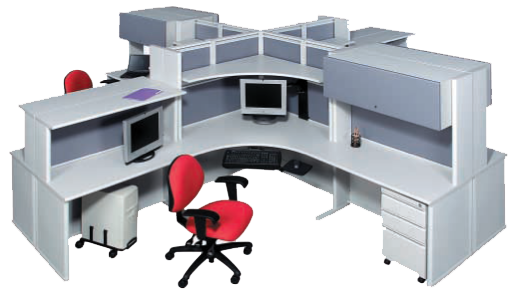

Modular design in buildings
Modular design can be seen in certain buildings, especially modular buildings. Modular buildings (and also modular homes) generally consist of universal parts (or modules) that are manufactured in a factory, such as Allied Modular, and then shipped to a build site where they are assembled into a variety of arrangements. Modular buildings can be added to or reduced in size by adding or removing certain components. This can be done without altering larger portions of the building. Modular buildings can also undergo changes in functionality using the same process of adding or removing modular components. For example, an office building can be built using modular parts such as walls, frames, doors, ceilings, and windows. The office interior can then be partitioned (or divided) with more walls and furnished with desks, computers, and whatever else is needed for a functioning workspace. If the office needs to be expanded or redivided to accommodate employees, modular components such as wall panels can be added or relocated to make the necessary changes without altering the whole building. Later on, this same office can be broken down and rearranged to form a retail space, conference hall or any other possible type of building using the same modular components that originally formed the office building. The new building can then be refurnished with whatever items are needed to carry out its desired functions. Other types of modular buildings that are offered from a company like Allied Modular are a guardhouse, machine enclosure, press box, conference room, two-story building, cleanroom and much more applications.
Link: wikipedia
Animated Project on plasm.js
Linx furniture
One furniture line really can do it all! LINX modular furniture is different from conventional office lines. It is not a panel-based system, but a freestanding technical desking platform. This kind of construction gives you and your facility planners the ultimate flexibility in creating a space efficient office layout.
